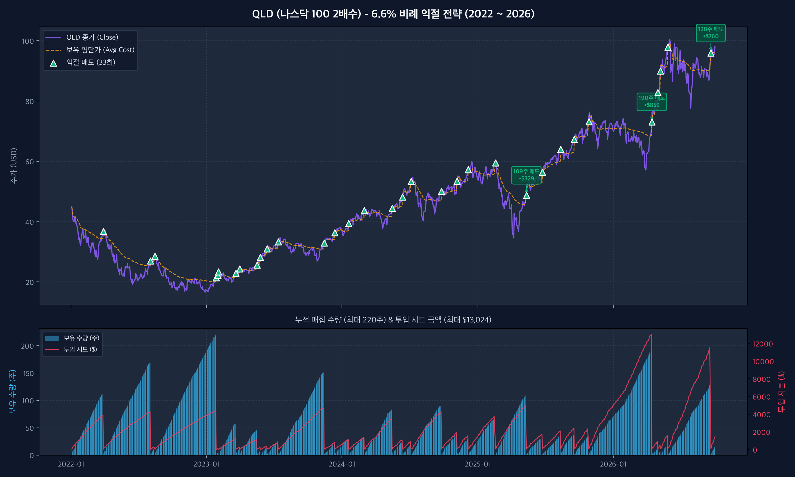
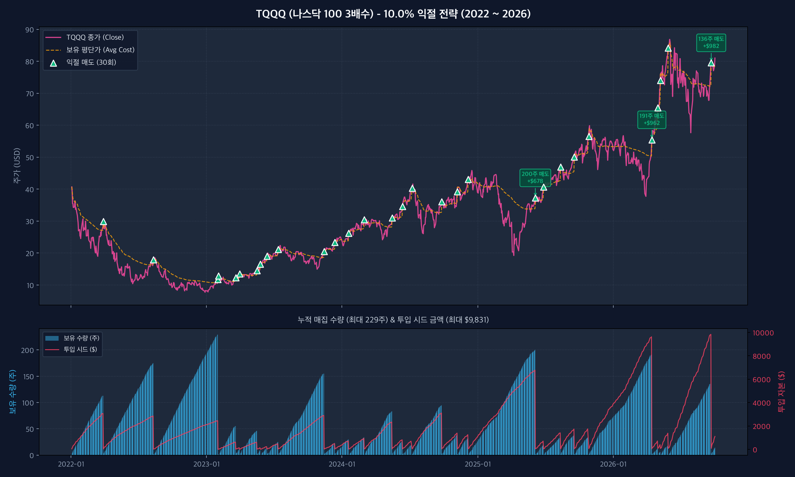
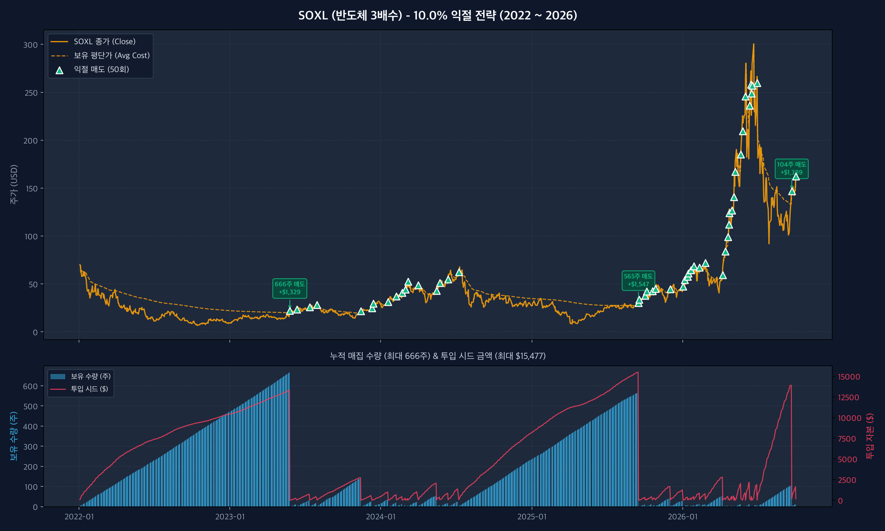
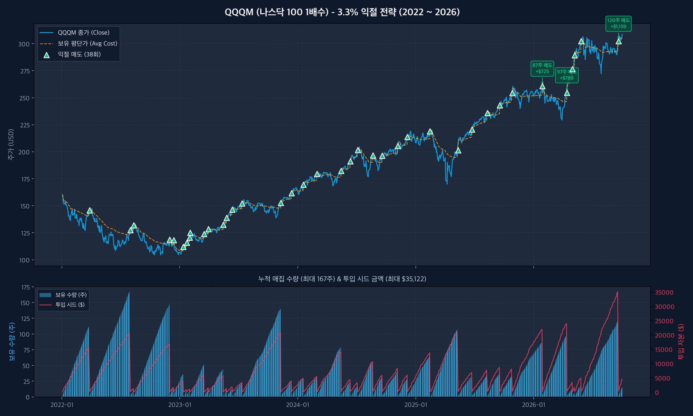

역대 최대 필요 시드
$13,024 (약 1,780만원)
💡 QLD (+6.6% 비례 익절) 차트 분석 포인트
초록색 삼각형(▲)은 평단가 대비 +6.6%에 도달하여 전량 익절된 순간을 나타냅니다.
하단 파란색 막대(보유 수량)가 쌓이다가 익절 시점에 정확히 0으로 초기화되며 현금화되는 사이클을 확인하실 수 있습니다.

🔍 클릭하여 고해상도 원본 확인 가능
역대 최대 필요 시드
$9,831 (약 1,350만원)
💡 TQQQ (+10.0% 익절) 차트 분석 포인트
2022년 대폭락장 속에서도 3월과 8월 반등장에서 2번의 전량 익절을 기록했습니다.
2026년 9월 22일에는 여름 조정장 동안 모인 136주를 일괄 익절하며 단번에 +$982를 실현했습니다.

🔍 클릭하여 고해상도 원본 확인 가능
역대 최대 필요 시드
$15,477 (약 2,120만원)
💡 SOXL (+10.0% 익절) 차트 분석 포인트
2022년 한 해 동안 471주, 2023년 5월까지 총 666주를 연속 매집하다가
2023년 5월 26일 엔비디아 발 랠리로 단 한 번에 +$1,329 수익으로 전량 탈출하는 극적인 사이클이 하단 매집 차트에 선명히 나타납니다.

🔍 클릭하여 고해상도 원본 확인 가능
역대 최대 필요 시드
$35,122 (약 4,800만원)
💡 QQQM (+3.3% 익절) 차트 분석 포인트
1배수 특성상 변동폭이 완만하지만, 3.3%라는 낮은 익절 목표 덕분에 38번이나 지속적으로 수익을 실현했습니다.
QQQ 대비 시드를 약 60% 절약하면서도 1배수 특유의 편안한 우상향 곡선을 그립니다.

🔍 클릭하여 고해상도 원본 확인 가능